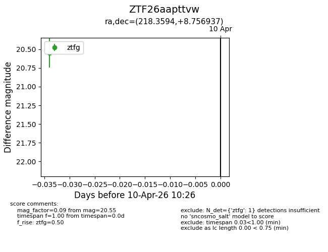
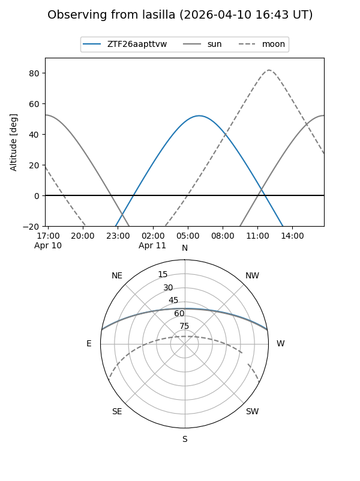
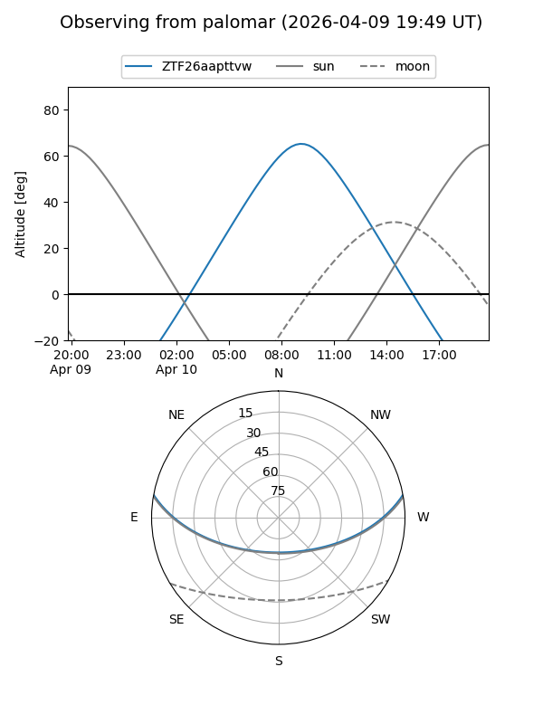

ZTF26aapttvw
Target ZTF26aapttvw at 2026-04-10 10:34
Aliases and brokers:
FINK: link
Lasair: link
ALeRCE: link
alt names
ZTF26aapttvw (ztf,fink_ztf)
Coordinates:
equatorial (ra, dec) = 218.3594,+8.75694
equatorial (HMS+DMS) = 14:33:26.26,+08:45:24.97
galactic (l, b) = (0.4124,+59.69450)
Flags:
Photometry:
last ztfg=20.55
1 ztfg detections
Lightcurve

Visibility


Additional plots